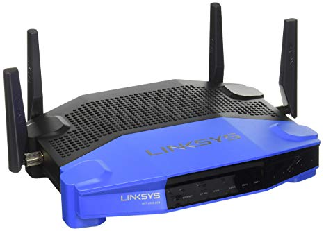
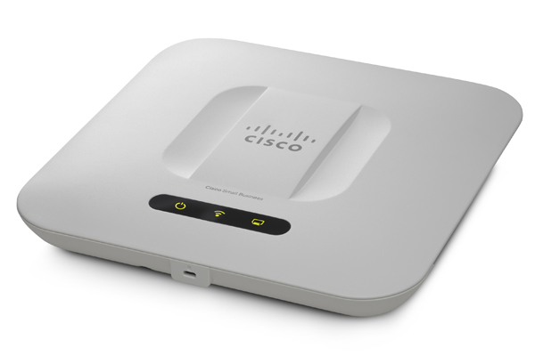
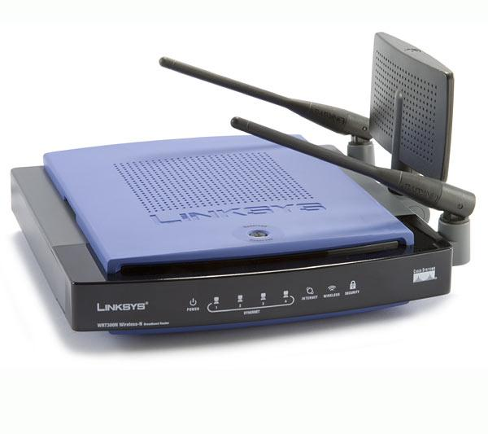

Dispositivos de Red
Se pueden usar diversos dispositivos en una red para proporcionar conectividad.

Se necesitan los componentes físicos de una red para trasladar los datos entre estos dispositivos. Las características de los medios determinan dónde y cómo se utilizan los componentes.
Los medios más comunes utilizados en las redes:
- Par trenzado.
- Cableado de fibra óptica.
- Ondas de radio.
El dispositivo que se utilice dependerá de la cantidad de dispositivos que se conecten, el tipo de conexiones que éstos utilicen y la velocidad a la que funcionen los dispositivos.
Estos dispositivos de red especializados permiten que la transmisión de datos sea más extensible y eficaz que una simple red peer-to-peer.
Además de la computadora, los dispositivos más comunes en una red son:
(Revisar información de cada recuadro. Para desplegar la información de un tema, seleccionar el recuadro correspondiente.)
Los hubs son dispositivos que extienden el alcance de una red al recibir datos en un puerto y, luego, al regenerar los datos y enviarlos a todos los demás puertos.
Este proceso implica que todo el tráfico de un dispositivo conectado al hub se envía a todos los demás dispositivos conectados al hub cada vez que el hub transmite datos. Esto genera una gran cantidad de tráfico en la red.

Los hubs también se denominan concentradores porque actúan como punto de conexión central para una LAN.
Los archivos se descomponen en pequeñas piezas de datos, denominadas paquetes, antes de ser transmitidos a través de la red.
Este proceso permite la comprobación de errores y una retransmisión más fácil en caso de que se pierda o se dañe el paquete.
La información de dirección se agrega al comienzo y al final de los paquetes antes de su transmisión. El paquete, junto con la información de dirección, se denomina trama.

Las redes LAN generalmente se dividen en secciones denominadas segmentos, de la misma manera que una empresa se divide en departamentos. Los límites de los segmentos se pueden definir con un puente. Un puente es un dispositivo que se utiliza para filtrar el tráfico de la red entre los segmentos de la LAN. Los puentes llevan un registro de todos los dispositivos en cada segmento al cual está conectado el puente. Cuando el puente recibe una trama, examina la dirección de destino a fin de determinar si la trama debe enviarse a un segmento distinto o si debe descartarse. Asimismo, el puente ayuda a mejorar el flujo de datos, ya que mantiene las tramas confinadas sólo al segmento al que pertenece la trama.
Es posible que un puente típico tenga sólo dos puertos para unir dos segmentos de la misma red. Un switch tiene varios puertos, según la cantidad de segmentos de red que se desee conectar. Un switch es un dispositivo más sofisticado que un puente. Un switch genera una tabla de las direcciones MAC de las computadoras que están conectadas a cada puerto. Cuando una trama llega a un puerto, el switch compara la información de dirección de la trama con su tabla de direcciones MAC. Luego, determina el puerto que se utilizará para enviar la trama.
Mientras que un switch conecta segmentos de una red, los routers son dispositivos que conectan redes completas entre sí. Los switches utilizan direcciones MAC para enviar una trama dentro de una misma red. Los routers utilizan direcciones IP para enviar tramas a otras redes.

Un router puede ser una computadora con un software de red especial instalado o un dispositivo creado por fabricantes de equipos de red. Los routers contienen tablas de direcciones IP junto con las rutas de destino óptimas a otras redes.
Los puntos de acceso inalámbrico proporcionan acceso de red a los dispositivos inalámbricos, como las computadoras portátiles y los asistentes digitales personales (PDA).

El punto de acceso inalámbrico utiliza ondas de radio para comunicarse con radios en computadoras, PDA y otros puntos de acceso inalámbrico. Un punto de acceso tiene un alcance de cobertura limitado. Las grandes redes precisan varios puntos de acceso para proporcionar una cobertura inalámbrica adecuada.
Existen dispositivos de red que realizan más de una función.
Resulta más cómodo adquirir y configurar un dispositivo que satisfaga todas sus necesidades que comprar un dispositivo para cada función. Esto resulta más evidente para el usuario doméstico.

Para el hogar, el usuario preferiría un dispositivo multipropósito antes que un switch, un router y un punto de acceso inalámbrico. Un ejemplo de dispositivo multipropósito es Linksys 300N.